每週各分組組員必須將參與分組協同過程之電腦操作流程錄成影片後, 上傳至各自的 Youtube 帳號區, 並嵌入各分組網站頁面中.
Week1
step1:建立一個新的倉庫,名字為自己的學號.github.io,權限設為公開
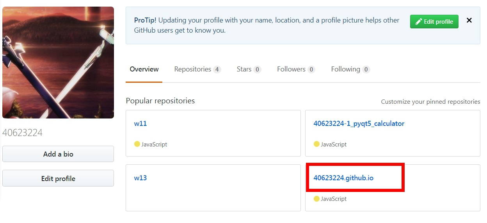
step2:克隆新的倉庫的網址,資料夾名字取為40623224,按Enter
git clone https://github.com/40623224/40623224.github.io 40623224
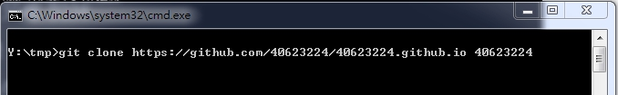
step3:除了.git和README.md不能複製,其餘都複製在自己的資料夾
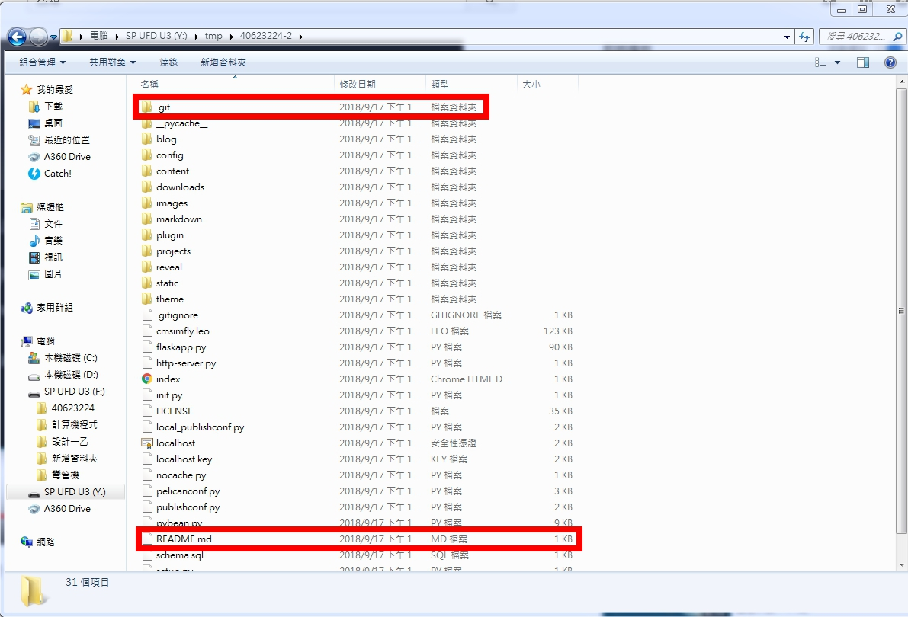
step4:先看自己的狀態然後增加,再提交,推送的名稱為initial add
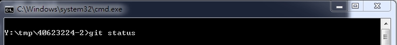
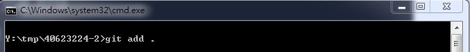
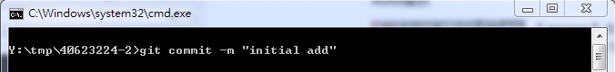
step5:設定自己提交的email和名字
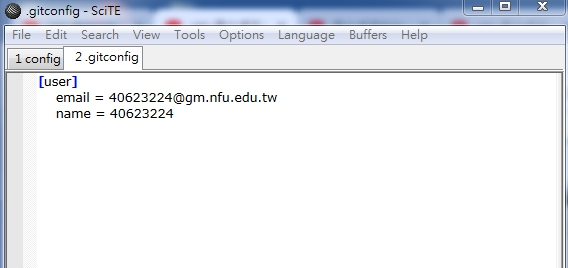
step6:開啟進端https://localhost:8443進去修改40623224
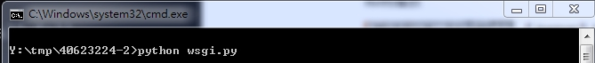
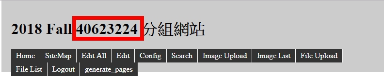
step7:在重複step4的步驟,在git push上傳
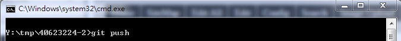
完成gif圖:
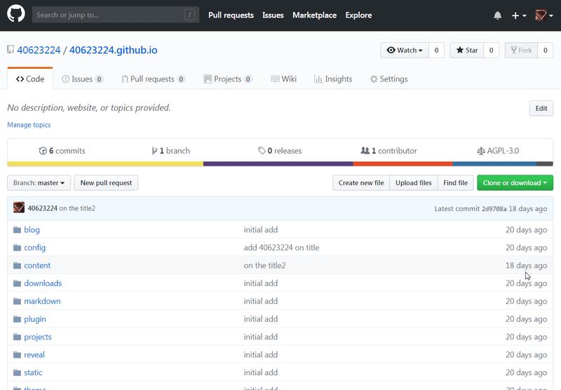
Q&A:
Q:什麼是Onshape?
A:Onshape是一個現代化的CAD系統，可以消除設計僵局，幫助工程師做最好的工作。Onshape將高級建模工具和設計數據管理結合在一個安全的雲工作空間中，該工作空間已迅速成為全球數千家公司的主要CAD系統。
Q:為什麼選擇Onshape?
A:因為Onshape可以主動幫助我們並保護我們的知識產權，而它有七種不同的安全措施(即密碼保護訪問、雙因素認證、數據庫備份程序、專用服務器、通信安全、加密、第三方測試)。
影片:
心得:第一週開始重新接觸github有點害怕，但是聽老師解說之後其實只是沿用上學期學過的東西，所以我覺得應該是撐得住，但是這學期還多加了一個名叫''Onshape''這套軟件，因為從來沒接觸過所以還是有點害怕，但是聽到老師引用把餐廳的食物(Onshape)吃下去，甚至做得更好吃(學習)，讓我覺得反而不可怕了。
Week2
老師旗下的40623224每週學習作業倉儲
Step1:依照Week1先去mde.tw領取個人倉儲
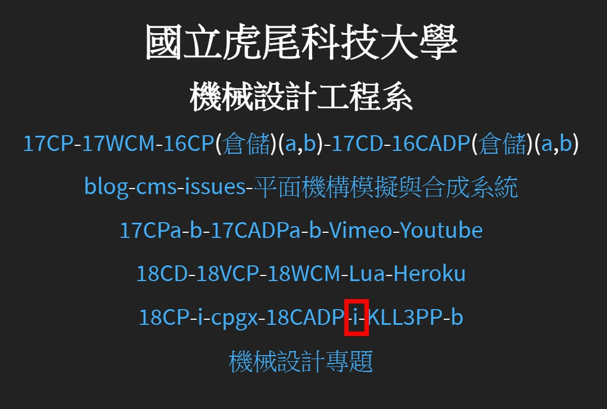
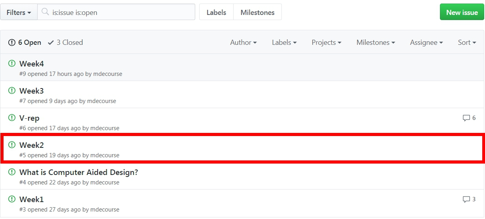
Step2:利用 Settings 將內定 branch 設為 gh-pages
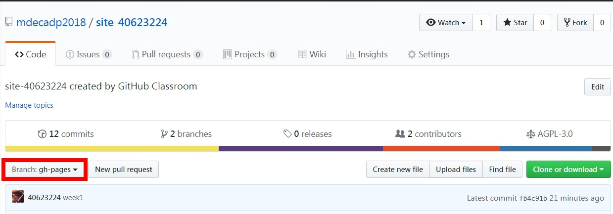
Step3: git clone 作業倉儲至近端後, 著手將練習 Onshape 的各項過程資料存入 CMSimfly, Reveal.js 與 Pelican Blog 中
*若要在圖片上加上有顏色的框,對LEO開啟Y:/tmp/40623224/cmsimfly.leo調整顏色粗細大小
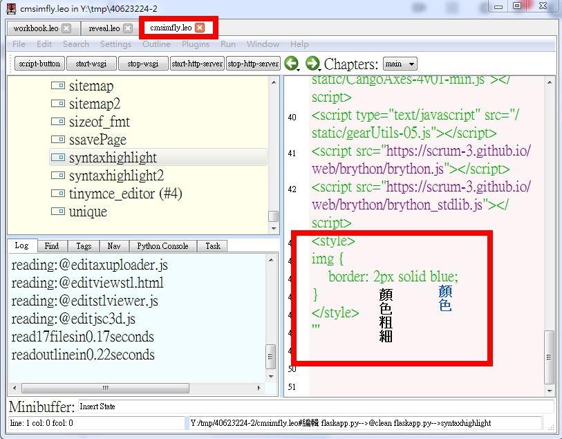
完成圖:
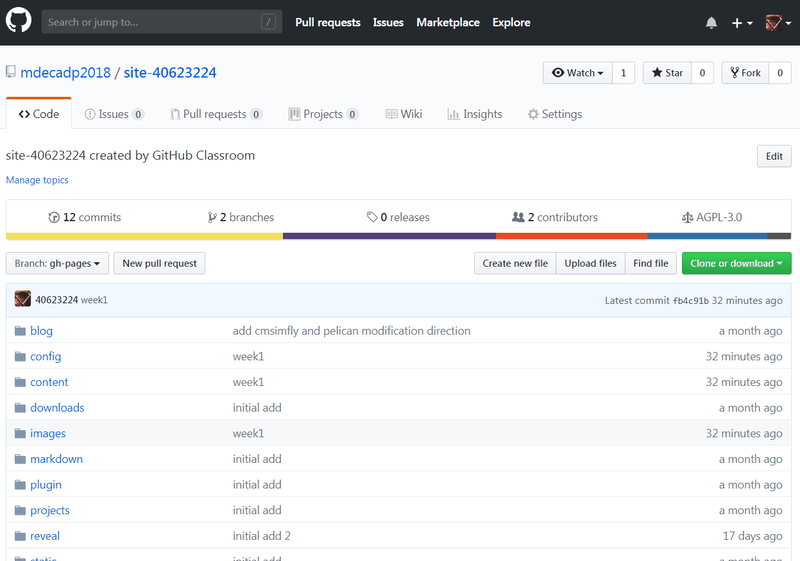
影片:
心得:第二週學習如何管理期中作業倉儲的網站內容以及投影片內容，每週必須放上進度，到期中的時候會操作期中考作業，到時去管理自己的倉儲，做法大約是平常上課教的，應該是可以做完。
Week3
2018/09/24中秋節放假~~
石頭日式無煙燒肉
散播歡樂散播愛
Week4
Onshape 是一套純雲端 MCAD (Mechanical Computer Aided Design) 套件, 可以利用電腦中的瀏覽器, 手機或平板中的 App, 就可以執行 2D/3D 零組件設計繪圖.
有關 Onshape 如何建立零組件, 請參考:
https://www.onshape.com/cad-blog/under-the-hood-how-does-onshape-really-work
雲端應用的特性是: 用多少運算資源, 才開啟多少運算資源, 可最佳化且不至超載.
Onshape is like any other large-scale modern cloud application – a collection of servers and services. They can run on machines optimized for their purposes; and the number of instances can be optimized so that they are always busy, but not overloaded, to make efficient use of resources.
Some servers that handle things (such as user authentication and authorization, and finding and listing documents) process lots of requests, but do not do much “real work” themselves. They forward complex requests to other servers. Others know what is “inside” a document, and keep modeling sessions in memory, resulting in long-lasting sessions for modeling with documents.
Onshape 的幾何模擬核心採用 Parasolid
Onshape 採用 D-Cubed 解繪圖過程中的幾何約束條件
Others, the admittedly unimaginatively named “geometry servers,” do all the math – these are optimized for computation power. These servers are the ones that reconstruct geometry from feature lists and FeatureScript, solve for instance positions in assemblies, and compute graphical tessellations. They make use of the venerable geometric modeling kernel Parasolid and constraint solver D-Cubed – both well-tested by many years of use in many CAD systems – which we license from Siemens PLM.
Step1:建立 Onshape 帳號 - 請利用學校 gmail 建立教育版帳號
Step2:3D 環境導航 (navigate)
Step3:說明基於草圖 (sketch-based)的建模
Step4:介紹 4 個基本特徵 (features)（擠出(extrude)，旋轉(revolve)，掃描(sweep)，和斷面混成(loaf)）
Step5:從 2D 過渡到 3D
Step6:介紹基本草圖
Step7:附錄A：鍵盤快捷鍵 (keyboard shotcuts)，滑鼠和觸控平面手勢 (touchpad gestures)，檢視工具
Step8:附錄B：導航說明檔，建立帳號，訂閱計劃 (subscription plans)
Step9:圓柱薄殼 (cylinder shell) - 繪圖界面與可視化/檢視的介紹
Step10:針對既有草圖的模型 - 接續建立特徵
Step11:現存公用模型 (public models) - 如何搜尋並復製到工作區 (workspace)
影片:
心得:第四週開始學習Onshape，這一週剛開始讓我自己熟悉一下它的介面，發現其實與其它不同的軟體譬如inventor等等這些軟體相似，然而我從簡單的繪圖開始，到後面使用掃略以及斷面混成，想必只要有心一定學得起來的。
Onshape Assessment1
Q:What’s the quickest way to learn more about each feature in the toolbar?
(什麼是了解工具欄中每個功能的最快方法)
A:Hover the mouse over it for a second, and a description of the feature will pop up
(將鼠標懸停在其上一秒鐘，將彈出該功能的說明。)
Q:Briefly describe the four foundational features. Feel free to draw pictures if it helps:
(簡要描述四個基本特徵。 請隨意繪製圖片幫助說明：)
A:
a. Extrude( 擠出 ): This geometry is created when a constant cross section is extruded in a straight direction(當一個恆定的橫截面沿直線方向擠出時，會產生這種幾何形狀):
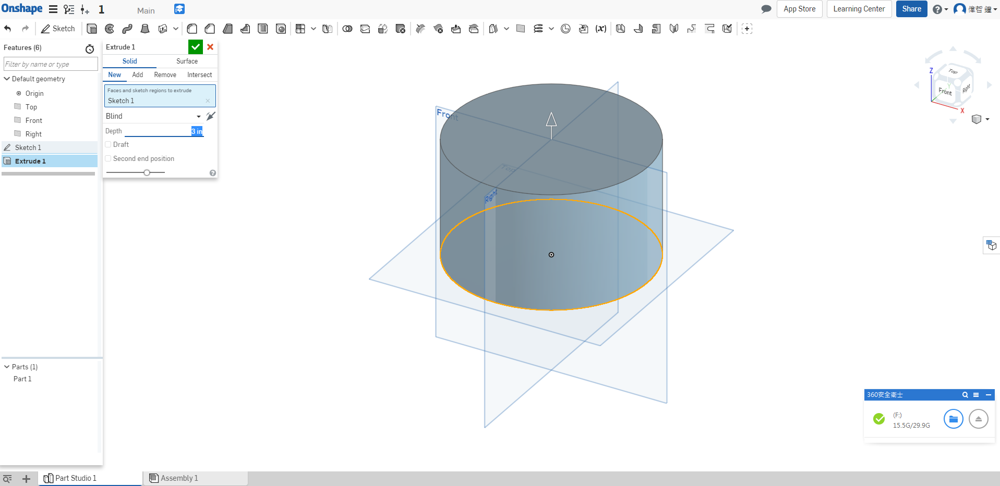
b. Revolve( 迴轉 ): This geometry is created when a constant cross-section is revolved
around an axis of revolution(當旋轉恆定橫截面時創建此幾何圍繞一個旋轉軸).
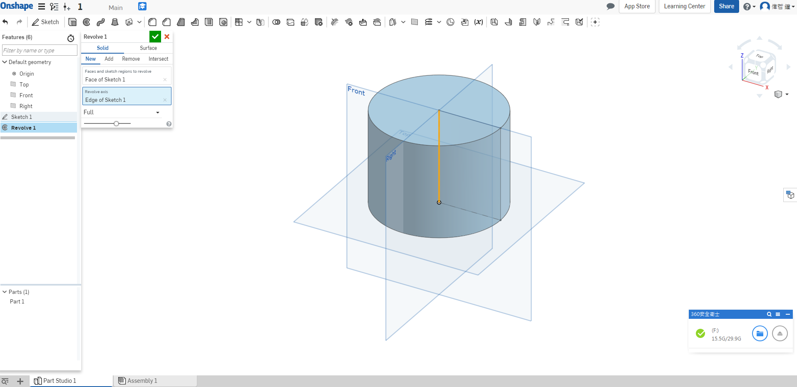
c. Sweep( 掃掠 ): This geometry is created when a constant cross-section is swept along a path(當沿路徑掃過恆定的橫截面時，會創建此幾何體).
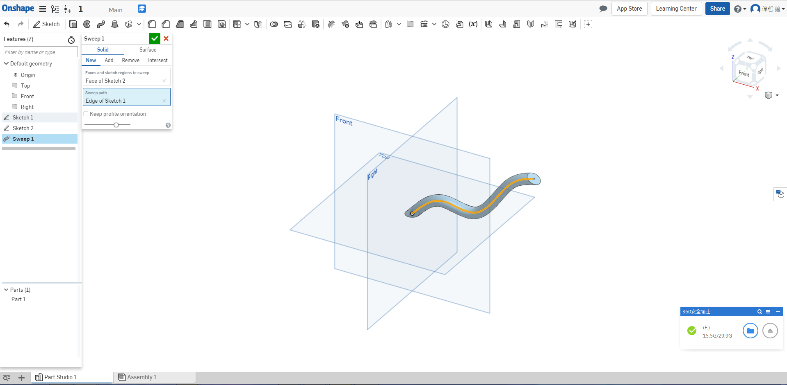
d. Loft( 斷面混層 ): This geometry is created when multiple cross sections are smoothly
connected together(當多個橫截面平滑時，會創建此幾何體).
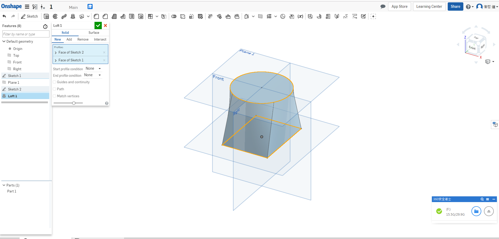
Q:What is the default geometry in a Part Studio?
(Part Studio中的默認幾何體是什麼？)
A:The origin and three orthogonal planes: Top, Front, Right.
(原點和三個正交平面：上視圖，前視圖，右側視圖 。)
Q:What’s the difference between a box select from Left-to-Right and a box select from
Right-to-Left?
(從左到右框選和從右到左框選有什麼區別)
A:L-R = selects everything within the box, R-L = selects everything the box touches
( 框選框框內的所有內容 )
Q:Can a document in Onshape have multiple Part Studios?
( Onshape的文件可以有多個Part Studios嗎 )
A:Yes.
Week5
*設計意圖指在設計進行前, 必須完成之專案目的與需求確認
*幾何外型越複雜, 越需要在零件設計之前做好設計意圖的確認
學習要點:
1.簡介"設計意圖" (design intent)
2.設定尺寸 (dimensions) 與約束 (constraints)
3.自動推理 (automatic inferencing)
4.繪製精確的零件 (accurate part)
5.草圖繪製練習
6.運用與建立平面 (planes)
7.建立圓角 (fillets) 與倒角 (chamfers)
8.使用多個 (multiple) 草圖區域 (sketch regions)
9.基本零件
10.繪製時鐘模型 - 用於設計意圖教學
11.各種簡單的幾何形狀 (geometric shapes)
影片:
心得:第五週進入到Onshape第二週，這一週開始必須要了解到自己的設計意圖是什麼，還有設定尺寸以及如何去約束他，並且要正確和精準。
Onshape Assessment2
Q:Describe in your own words, what is design intent?
(用你自己的話來描述什麼是設計意圖 )
A:Design Intent is the practice of developing your project’s objectives and requirements
even before working on your design
( 設計意圖是在開始設計之前開發項目目標和要求的實踐 )
Q:What is the difference between sketch entities that are colored blue, black, and red?
(藍色，黑色和紅色的草圖實體之間有什麼區別？)
A:Blue means it is underconstrained, black means it is fully constrained, and red means it is overconstrained.
(藍色表示它不受約束，黑色表示它完全受約束，紅色表示它過度約束。)
Q:What is automatic inferencing, and how is it utilized?
(什麼是自動推理，以及如何使用它？)
A:When Onshape automatically assigns constraints to sketch entities while sketching. It
can be activated by hovering over an existing entity, or temporarily turned off by
selecting the [shift] key.
(當Onshape在繪製草圖時自動為草圖實體指定約束時。 它可以通過將鼠標懸停在現有實體上來激活，也可以暫時關閉選擇[shift]鍵。)
Q:Which feature is this and what is it used for: ?
(這是什麼功能以及它用於：？)
A:This is the plane tool, used to create new planes in addition to the default
Top/Right/Front planes.
(這是平面工具，除了默認的頂部/右側/前平面外，還用於創建新平面 )
Q:How are fillets and chamfers similar? How are they different?
(圓角和倒角有何相似之處？ 他們有什麼不同？)
A:They are the same in that both features are applied to edges only, they are different in
that a fillet creates a round profile, and a chamfer creates a flat profile.
(它們是相同的，因為兩個特徵僅應用於邊緣，它們是不同的
圓角創建圓形輪廓，倒角創建平面輪廓。)
Week6
將倉儲中的 flaskapp.py 更新至最新版本
搜尋 github cmsimfly
影片:
心得:
瞭解老師給予的Onshape教材中的一些專屬名詞，把不懂的單字記錄下來，如果遇到這個單字時能夠迅速找到它的中文解釋，以及如何更新最新的CMSimfly，不然更新自己網站的內容時，因為某些原因導致 https://localhost:8443 一直出現錯誤而無法使用，還有討論到有關人事時地物等關鍵內容的架構安排。
Onshape Assessment3
Q:What are the 3 types of Boolean Operations and how do they work? Feel free to draw
pictures if they help.
(3種類型的布爾運算有哪些，它們如何工作？ 隨意畫畫圖片，如果他們幫助。)
A:
a. Add/Union( 接合 ) - A single Part is created from multiple, overlapping “Tools”.( 合併零件 )
b. Subtract ( 切割 )- “Tools” are used to remove material from “Targets”. ( 移除零件，允許零件之間的偏移 )
c. Intersect( 相交 ) - The overlapped volumes are created by multiple, overlapping “Tools”( 合併零件，僅在交叉點存在的地方保留材料 )
Q:What is the main difference between a Linear and a Circular Part pattern?
(線性和圓形零件圖案之間的主要區別是什麼？)
A:A Linear pattern creates parts along a straight linear reference, a circular pattern creates parts around an axis reference.
(線性圖案沿直線參考創建零件，圓形圖案創建繞軸參考的零件。)
Q:When might you use a Part Pattern versus a Feature Pattern?
(您何時可以使用零件圖案與特徵圖案？)
A:A Part Pattern patterns an individual part while a Feature Pattern patterns a specific
feature (or features) listed in the Feature Tree, such as extrude, fillet, sweep, and sketch.
(零件圖案模擬單個零件，而特徵圖案模式特定要素樹中列出的要素（或多個要素），例如拉伸，圓角，掃掠和草圖。)
Q:Describe in your own words what “Top-Down Design” means.
(用你自己的話來描述“自上而下的設計”的含義。)
A:Top-Down Design is when the shape of an overall product is sketched first, and then
different regions of that sketch are used to create the lower level parts and their features.
(自上而下設計是指首先勾畫整個產品的形狀，然後是該草圖的不同區域用於創建較低級別的部件及其特徵。)
Q:Why is it smart to put fillets and chamfers at the end of the feature list?
(為什麼在功能列表的末尾放置圓角和倒角是明智的？)
A:Because they are not critical features, and having them too early in the model, could
result in accidentally referencing them while creating critical geometry.
(因為它們不是關鍵功能，並且在模型中使用它們太早，所以可以導致在創建關鍵幾何體時意外引用它們。)
Q:How is the mirror tool being utilized in the creation of our Clamp design?
(如何在創建Clamp設計時使用鏡像工具？)
A:We are using it to save time by only modeling half of our pins and hinges, and then
mirroring them over the symmetry plane.
(我們只是通過模擬我們的一半引腳和鉸鏈來節省時間，然後在對稱平面上鏡像它們。)
Week7
For designing and manufacturing an assembly, it is important to know which parts go into the assembly, how many of each, how they are assembled, and how they should perform.
(為了設計和製造組件，重要的是要知道哪些部件進入組件，每個部件中有多少，它們如何組裝以及它們應該如何執行。)
A Mate in Onshape fully describes how two parts will interact with each other by specifically controlling each degree of freedom through the use of things called Mate Connectors. You can think of a Mate Connector as a small, local coordinate system (an x, y, and z axis) for a joint between two parts. The Red line is the X-axis, the Green is the Y, and the Blue is the Z.
(Onshape 中的配合通過使用稱為配合連接器的東西，通過專門控制每個自由度來充分描述兩個部件如何相互作用。您可以將配合連接器視為兩個部件之間的連接的小型局部坐標系（x，y 和 z 軸）。紅線是 X 軸，綠色是 Y 軸，藍色是 Z 軸。)
Animations are a great way to view the motion of your Mate before accepting it. Onshape will automatically move the Mate in a way that will exercise the Degrees of Freedom. In a Revolute Mate the part will rotate, in a Slider Mate, the part will slide, in a Cylinder Mate, the part will slide and rotate, etc.
(動畫是在接受配合之前查看配合動作的絕佳方式。Onshape 將自動配合，以行使自由度。在旋轉配合中，零件將會旋轉，在滑塊配合中，零件將會滑動，在圓柱配合中，零件將會滑動和旋轉等)
A relation is a way in Onshape to constrain degrees of freedom between two Mates. Where a Mate controls how many degrees of freedom a pair of parts has between them, a Relation can control how those degrees of freedom move with respect to each other. There are 4 types of Relations in Onshape: Gear, Rack and Pinion, Screw, and Linear. These relations rely on preexisting Mates to define the type of motion that will occur between two parts.
(關係是在 Onshape 中限制兩個配偶之間自由度的一種方式。其中一個配合控制一對部件的多少個自由度可以控制那些自由度如何相對於彼此的移動。在 Onshape 中有 4 種類型的關係：齒輪，齒條和小齒輪，螺釘和線性。這些關係依賴於已有的配合來定義將兩個部件之間發生運動的類型。)
心得:
由於github在這禮拜突然故障，所以老師找出其他方法解決並探討，起初發現github沒辦法登入，本來以為自己推送成功，後來跑去看自己的倉儲才看到自己根本沒有推送東西上去，聽到老師說才知道是壞掉的問題，老師推論說github是因為在更換伺服器所以才暫時性無法使用，如果不是這個問題的話可能之後都要讓我們使用Fossli SCM 。
Onshape Assessment4
Q:What is the difference between a fixed and a moveable assembly in Onshape?
(在Onshape中固定組件和可移動組件之間有什麼區別？)
A:A Fixed assembly is created using the Top-Down Design method in a Part Studio and is
static, while a Moveable assembly is built in an Assembly tab using Mates and can be
used to visualize motion.
( 固定裝配使用零件中的自頂向下設計方法創建，並且是靜態的，而可移動裝配合使用在裝配選項卡中構建，可用於可視化運動 )
Q:What is so unique about the Mate Connector in Onshape?
(Onshape中的配合連接器有什麼獨特之處)
A:It is a single feature which allows for the full definition of all 6 degrees of freedom. It is
the bases for how mates are defined.
(它是一個單一的功能，可以完全定義所有6個自由度。 它是
如何定義配偶的基礎。)
Q:. How many degrees of freedom do the following Mates have:
(多少自由度執行以下配合)
A:
a. Fastened - 0 ( 固定 - 0 )
b. Revolute - 1 ( 迴轉 - 1 )
c. Slider - 1 ( 滑塊 - 1 )
d. Planar - 3 ( 平面 - 3 )
e. Cylindrical - 2 ( 圓柱形 - 2 )
f. Ball - 3 ( 球 - 3 )
Q:When a mate is initially defined, does Onshape solve the entire model, or just that mate?
(當最初定義配合時，Onshape 會整個模型一起定義，還是只有那個配合)
A:Just that mate(( 只有那個配合 ))
Q:What is a Relation? Provide 2 examples. (什麼是關係？ 提供2個例子。)
A:It allows degrees of freedom to be defined between two existing mates. Examples are
Gear, Rack & Pinion, Screw, and Linear.
(它允許在兩個現有配合之間定義自由度。 例子是齒輪，齒條和小齒輪，螺釘和線性。)
Week8
心得:這一週課程是讓我們題交推送之前尚未完成的Week，並知道自己學到哪裡，然而期中考過後準備分組課程，一組以六個人為單位，這八週，從學習github到繪製Onshape，再到可以熟練繪製Onshape，然而了解一些畫法，找出因應方法，接下來就是開始準備期中過後的課程了~
Onshape Assessment5
Q:Which four views are included in the “Four View Layout” in Onshape?
(在Onshape的“四視圖佈局”中包含哪四個視圖？)
A:Front, Top, Right, Isometric( 前視圖、上視圖、右側視圖、等角視圖 )
Q:What is the difference between a Dimension and a tolerance? (尺寸和公差有什麼區別？)
A:The dimension is the nominal (“perfect”) measurement of our geometry, whereas the
tolerance is the acceptable variation of our geometry allowed during manufacturing.
(尺寸是我們的幾何的標稱（“完美”）測量，而公差是製造過程中允許的幾何形狀的可接受變化。)
Q:Name & Describe the following Dimension/Tolerance types:( 描述以下尺寸/公差類型 )
A:
a. Deviation( 偏差 ) - This communicates the allowable +/-deviation from the nominal dimension.( 允許 + / - 偏離標稱尺寸)
b. Limits( 限制 ) - This communicates the allowable limits of the dimension (the nominal is not shown). ( 尺寸的允許限制,標稱未顯示 )
c. Basic ( 基本 )- This has no tolerance, and therefore may only be used when GD&T is utilized to define the tolerance range.( 沒有公差，因此只能在使用 GD＆T 時來定義公差範圍 )
Q:What is the real-world implication of changing a standard dimension on an engineering print from “1.750” to “1.75”? ( 將工程印刷品的標準尺寸從 “ 1.750 ” 改為 “ 1.75 ” 的現實含義是什麼 )
A:It means that we are changing the tolerance to a “looser” one (wider allowable range) as defined by the tolerance block in the drawing format.
(這意味著我們正在將容差改為“寬鬆”（更寬的允許範圍）由圖形格式的公差塊定義。)
Q:Do Onshape drawing views update automatically? Why or why not?
(Onshape繪圖視圖會自動更新嗎？ 為什麼或者為什麼不？)
A:No they do not, as this gives the designer control whether they want the drawing to
reflect the latest design or not. It is a form of revision control, since Onshape does not
have (or need) a formal PDM system.
(設計師控制他們是否想要繪圖反映最新的設計與否。這是一種修訂控制形式，因為Onshape沒有擁有（或需要）正式的PDM系統 )
Week9
期中考週~
六人分組
期中自評:83
Week10
心得:這一週開始進行分組專題，我將會用前9週所學到的技術運用在期末專題上，與大家同心協力製作這一次專題，但是需要透過大家的努力，從現在開始我們就是一個團隊，希望各位能一起完成本次專題，而我們本次專題為3D列印機。
Onshape Assessment6
Q:Do people need to have an Onshape account in order to be on an Onshape Team?
(人們是否需要擁有一個Onshape帳戶才能進入Onshape團隊？)
A:No, Onshape will automatically send them an email invitation to create an account
(不，Onshape會自動向他們發送電子郵件邀請以創建帳戶)
Q:What is a Derived Part, and why is it used?
(什麼是衍生零件，為什麼使用它？)
A:It is when you import geometry into a Part Studio from another Part Studio. It allows the Top-Down Design of fixed assemblies which reference existing components
(將幾何圖形從另一個Part Studio導入Part Studio時。它允許參考現有組件的固定組件的自上向下設計)
Q:In the first sketch of the Bluetooth Speaker, we used the small speaker to locate one of the circles. Why did we do this?
(在Bluetooth Speaker的第一個草圖中，我們使用小型speake來定位其中一個 圈子。我們為什麼這樣做？)
A:This was done so that the location of the speaker would drive the geometry of the frame. This is a prime example of Top-Down Design.
(這樣做是為了使speaker的位置能夠驅動框架的幾何形狀。 這是自上而下設計的一個主要例子。)
Q:Can multiple people work on the same Part Studio at the same time?
(多個人可以同時在同一個Part Studio上工作嗎？)
A:Yes.
Q:Name and describe two collaboration tools in Onshape used for communication
(在用於通信的Onshape中命名並描述兩個協作工具)
A:
a. Comment - Allows communication between team members, while referencing
exact geometry and/or features.
(註釋 - 允許團隊成員之間進行通信，同時引用精確的幾何和/或功能。)
b. Follow - Allows a user to follow another user within Onshape.
(關注 - 允許用戶在Onshape中關注其他用戶。)
Week11
心得:我們在課堂上利用時間討論我們這次的專題，並利用剩餘的時間一起把網站結構架設出來，然而我們在進行網站維護與更新遇上了一些問題，但是經由討論，發現到網站維護有一些特性，並把這些錯誤揪出來並解決。
Onshape Assessment7
Q:What is a “Version” and why are they used?
(什麼是“版本”，為什麼使用它們？)
A:A version is a specific point in time in the history of the model that can always be
restored. When sharing documents, the last saved version is used. Versions capture
snapshots of the design process.
(版本是模型歷史中可以始終存在的特定時間點 恢復。共享文檔時，使用上次保存的版本。版本捕獲 設計過程的快照。)
Q:Describe what FeatureScript is. (描述FeatureScript是什麼。)
A:Featurescript allows you to create your own custom features in Onshape that you can
share with the rest of the Onshape community? They behave just like any other
Onshape feature because they are written using the same language.
(Featurescript允許您在Onshape中創建自己的自定義功能 與其他的Onshape社區分享？他們的行為與其他任何一樣 Onshape功能因為它們是使用相同的語言編寫的。)
Q:Give two examples of custom features.(舉兩個自定義功能示例。)
A:Rib, Screw Boss, etc
Q:Does Onshape’s history clear itself when you close your browser window or logout of
Onshape?
(當您關閉瀏覽器窗口或註銷時，Onshape的歷史是否會自行清除 Onshape？)
A:No, Onshape’s history is permanent and forever(不，Onshape的歷史是永久的，永恆的)
Q:Can features be re-ordered in Onshape, if so how?
(可以在Onshape中重新排序功能，如果是這樣的話怎麼樣？)
A:Yes, simply click on a feature and drag it up/down the feature list.
(是的，只需單擊某個功能並在功能列表中向上/向下拖動即可。)
Week12
心得:這週上課我們依然做網站以及投影片，但是我們發現到只要有兩個人以上推送倉儲時，另外一位組員若是沒有先PULL下來，就會使網站出現錯誤，爾且修改會變得非常麻煩，但是如果另一位組員沒有把錯誤解決的話拖到下一位組員時BUG會更加嚴重，所以我們在討論之後以後推送的話先一個推再給另一個做，並且在做之前先PULL下來。
Onshape Assessment8
Q:Why was a Mate Connector specifically created in a Part Studio for the Bluetooth
Speaker?
(為什麼在Part Studio中專門為Bluetooth創建了一個Mate Connector Speaker？)
A:In the battery part studio, there was no locating geometry (since the batteries just float in the speaker frame compartment) so one was created using a sketch as a reference to aid in assembly.
(在電池部件工作室中，沒有定位幾何形狀（因為電池只是漂浮在speaker框架隔間中）所以使用草圖作為參考來創建一個以幫助組裝。)
Q:What does “Reorient Secondary Axis” mean, and when is it used?
(“Reorient Secondary Axis”是什麼意思，什麼時候使用？)
A:It allows a Mate in Onshape to be rotated around its Blue axis. It is used when the part
being assembled is not clocked in the correct direction.
(它允許Onshape中的Mate圍繞其藍軸旋轉。它用於零件正在裝配的時間不正確。)
Q:What is Snap Mode, and why would it be used?
(什麼是Snap模式，為什麼要使用它？)
A:Snap Mode allows parts which are being inserted into an assembly to have a fastened
Mate be created “on the fly”. This is particularly helpful when assembling hardware, and
can save a lot of time.
(捕捉模式允許插入組件的部件具有固定 配對是“動態”創建的。這在組裝硬件時尤其有用 可以節省很多時間。)
Q:When is a Mate Group used?(什麼時候使用Mate Group？)
A:When you want to treat multiple parts as a subassembly, and prevent relative motion
between the parts
(當您想將多個零件視為子裝配時，並防止相對運動部件之間)
Q:Can replicate be used to mate across multiple parts, or only to multiple locations on the same part?
(可以復制用於跨多個部分交配，或僅用於交互的多個位置同一部分？)
A:Across multiple parts.(跨越多個部分。)
Week13
心得:這一週開始經由課堂上老師的各組專題重點介紹後，我與另一位組員開始討論如何畫出3D列印機，並思考如何呈現出來，在回家後試畫出框架的部分，而程式部分的展現也要考慮進去，否則畫出來的實體有可能不好去模擬。
Onshape Assessment9
Q:What is draft, and for what manufacturing purpose is it mainly used?
(什麼是草案，主要用於什麼製造目的？)
A:Draft is when you add a small angle (1-3°) to any surface so that it may be properly
manufactured using Plastic Injection Molding processes. The draft angle is measured
between the the surface and the direction of pull.
(草稿是指向任何表面添加一個小角度（1-3°）以使其正確 採用注塑成型工藝製造。測量拔模角度 在表面和拉動方向之間。)
Q:Why are small radii common in parts that have been designed for plastic injection
molding? (為什麼在設計用於注塑的部件中常見小半徑成型？)
A:Adding small radii to sharp edges allows for the plastic to “flow” better during the molding process, and facilitates easier removal of the part from the tooling after molding.
(向尖銳邊緣添加小半徑允許塑料在模製期間更好地“流動” 工藝，並有助於在模製後更容易地從工具中移除零件。)
Q:What is a “Split” feature?(什麼是“拆分”功能？)
A:It is when you cut a single part into multiple parts using a surface or plane.
(當您使用曲面或平面將單個零件切割成多個零件時。)
Q:Explain a typical use of a Variable in Onshape.
(解釋變量在Onshape中的典型用法。)
A:A Variable is used to establish a design parameter, for example the thickness of a plastic part, that may be referenced throughout the design; in multiple features and parts.(變量用於建立設計參數，例如塑料的厚度部分，可在整個設計中引用;在多個功能和部分)
Q:Explain what is going on in the “thickness” entry of the dialog box below:
(解釋下面對話框的“厚度”條目中發生了什麼：)
A:We are defining the thickness of the rib feature as an expression, 0.7 X “thk” inches,
where “thk” is a previously defined variable in our model.
(我們將肋骨特徵的厚度定義為表達式，0.7 X“thk”英寸， 其中“thk”是我們模型中先前定義的變量。)
Week14
心得:由於17週放連假的關係，我們這一週開始補課，大家各自的進度都在預期之中，我們將畫好的零組件組裝起來，在組合期間有一些問題，像是畫出來之後組裝時因為零件干涉的問題必須需要調整變數，而微調的零件又有可能影響另外一個零件，在這過程之中去完成組合，使我們的專題更接近完成的一步。
Onshape Assessment10
Q:How does the “Hole” feature save time? ("孔"功能如何節省時間？)
A:Since most holes have standard sizes, the Hole feature has presets geometry to allow
the user to just select from a library of options, instead of having to sketch the profile of
the hole. In addition, it just references existing sketch points, thus saving time during
hole placement as well.
(由於大多數孔都具有標準尺寸，因此孔特徵具有允許的預設幾何形狀 用戶只需從選項庫中進行選擇，而不必草繪輪廓 洞。此外，它僅引用現有的草圖點，從而節省了時間 孔位置也是如此。)
Q:What does the “offset” option do in the Spur Gear FeatureScript feature?
(“偏移”選項在Spur Gear FeatureScript功能中的作用是什麼？)
A:It allows the gear to be “clocked” so adjacent gears can be perfectly meshed
(它允許齒輪“定時”，因此相鄰的齒輪可以完美嚙合)
Q:True or False: Onshape can directly import a Solidworks Pack n Go file.
(對錯：Onshape可以直接導入Solidworks Pack n Go文件。)
A:True.
Q:Name two of the four “Direct Editing” features in Onshape
(在Onshape中命名四個“直接編輯”功能中的兩個)
A:
a. Modify Fillet(修改圓角)
b. Delete Face(刪除面)
c. Move Face(移動平面)
d. Replace Face(更換面)
Q:List 3 different capabilities that can be found in the App store.
(列出可在App Store中找到的3種不同功能。)
A:Rendering, CAM, BOM, Assembly Explode, FEA/CFD Simulation, 3D Printing, hardware libraries, etc.
Week15
心得:這週開始使用V-rep，看了老師給的參考資料，花了很多時間在查單字上，在學習的過程當中讓我知到英文的重要性，也知道自己的英文能力非常差，但利用這些課程讓我自己提升英文能力是一個不錯的選擇，而我們已經將零件組裝完成開始使用V-rep，老師也敘述為什麼要改版 ? (1) 增加功能 (2) 修改錯誤 還有為什麼要有版本紀錄 ? (1) 看誰有做事 (2) 可以還原 (3) 查看細節的更動，也意旨我們付出多少就拿多少分數。
Onshape Assessment11
Q:Name 2 typical real-world applications for a “Loft” feature.
(為“Loft”功能命名2個典型的實際應用程序。)
A:Fan blades, aircraft wings, propellor, other aerodynamic applications, etc.
(風扇葉片，飛機機翼，螺旋槳，其他空氣動力學應用等。)
Q:Which sketch tool is the best for tracing over curvy lines?
(哪種草圖工具最適合追踪曲線？)
A:Spline.
Q:What does it mean to “emboss” text onto the surface?
(將文字“浮雕”到表面上意味著什麼？)
A:It is when the text is either raised, or sunken, into the surface of a part
(當文字被抬起或凹陷進入零件表面時)
Q:What is a common application of a “Helix” feature? (“Helix”功能的常見應用是什麼？)
A:To model a spring, or a threaded surface(模擬彈簧或螺紋表面)
Q:What does it mean to “Branch and Merge” a design in Onshape?
(在Onshape中“分支和合併”設計意味著什麼？)
A:Generally speaking, “branching” and “merging” are tools used in concurrent design,
where design variations are investigated at the same time. A “Branch” represents one of
the several design options, and a “Merge” is when two design options are combined,
where the result has the design features of both options.
(一般來說，“分支”和“合併”是並發設計中使用的工具， 同時調查設計變化的地方。 “分支”代表其中之一 幾個設計選項和“合併”是兩個設計選項相結合， 結果具有兩個選項的設計特徵。)
Week16
心得:離學期末剩下2週的時間，我們在Vrep運用方面非常的弱，去查資料也只有鋼球運動系統和行走機器人可以參考，我發現網路上很多找的都是類似滑塊的運動以及活塞的運動，在3D列印機的教學上並沒有很多參考資料，但還是盡可能的去做完它。
Onshape Assessment12
Q:What do the red regions in a section view in Onshape mean?
(在Onshape的剖面視圖中的紅色區域是什麼意思？)
A:They represent an interference between two parts.
(它們代表兩個部分之間的干擾。)
Q:How do you measure the distance between two surfaces in Onshape?
(如何測量Onshape中兩個表面之間的距離？)
A:Simply select them, and look in the bottom right-hand corner of the graphics screen.
(只需選擇它們，然後查看圖形屏幕的右下角。)
Q:What must each part have before Onshape can report accurate Mass Properties?
(在Onshape報告準確的質量屬性之前，每個部件必須具備什麼？)
A:A material (density) assigned.(分配的材料（密度）。)
Q:What file type should be exported to 3D Print something from Onshape?
(應該將哪種文件類型導出到3D打印來自Onshape的東西？)
A:STL
Q:Does the Onshape mobile app allow you to edit your design via a phone or tablet, or is it just a “view-only” App? What’s another common use case?
(Onshape移動應用程序是否允許您通過手機或平板電腦編輯您的設計，或者是它 只是一個“僅限查看”的應用程序？另一個常見的用例是什麼？)
A:It allows you to view and edit your designs, as well as comment on designs wherever
you are(它允許您查看和編輯您的設計，以及在任何地方評論設計)
Week17
元旦放假~~
Week18
期末考週
專題完成~
期末自評:
1.各組成員在期末考週前, 自行利用至多 3 分鐘 Youtube 影片, 進行課程學習報告, 並將影片嵌入各組的期末網站中.
2.各組員利用期末考週時間, 同步至 ethercalc 登錄下半學期的自評成績.
3.各分組在期末考週, 以至多 15 分鐘, 採網際簡報方式, 說明各組所完成的期末專題內容, 其中包括專題執行規劃、具體完成任務、各組員分工情況與 final report pdf 製作流程等.